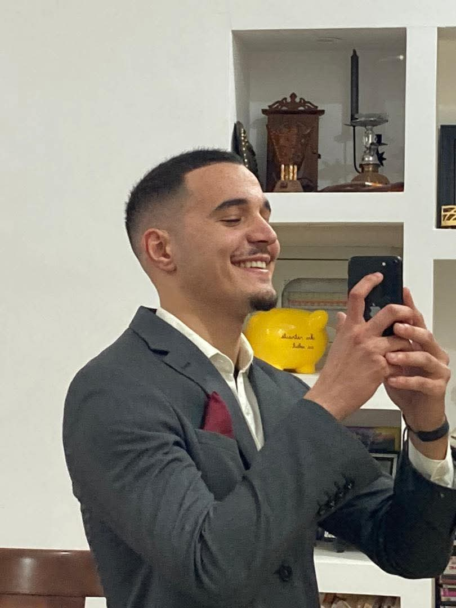

FADE IN : EXT. ORAN — JOUR
Taha
Zinai
Scénariste · Production · Acteur
« Raconter Oran, une image à la fois. »

ÉTUDIANT CINÉMA · ORAN 1SCÈNE 1 — À PROPOS
Qui je suis
Né à Oran en 2002, je suis un raconteur d'histoires. J'étudie le cinéma en Licence à la Faculté des Arts de l'Université Oran 1 (كلية الفنون – جامعة وهران 1).
J'écris des idées, je les organise et je les produis, et je passe aussi devant la caméra. Publicités, courts formats, contenus pour des marques locales : j'aime les histoires simples, drôles et vraies, ancrées dans ma ville.
Avant le cinéma, j'ai été pâtissier (CAP Pâtisserie, Hôtel Le Méridien Oran). J'en garde la rigueur, la précision et l'esprit d'équipe, que j'apporte aujourd'hui sur chaque tournage.
SCÈNE 2 — FILMOGRAPHIE
Projets
SCÈNE 3 — PARCOURS
Parcours
- AUJOURD'HUI
Licence Cinéma
Faculté des Arts — Université Oran 1
- 2026
Publicités & courts formats
Mugi Burger, Gulistan… écriture, production, tournage, montage et jeu.
- 2022 — 2023
CAP Pâtisserie
Hôtel Le Méridien, Oran
- 2020
Baccalauréat — Sciences expérimentales
Lycée Jil Bladi, Oran
SCÈNE 4 — COMPÉTENCES
Ce que j'apporte
Écriture
Idées, concepts publicitaires, scénarios courts.
Production
Organisation du tournage, lieux, équipe, planning.
Jeu d'acteur
Présence naturelle face caméra, humour, énergie.
Tournage & montage
Filmer et monter des contenus courts pour les marques.
FADE OUT.
Travaillons ensemble
Une idée de film, une pub, un rôle ? Écrivez-moi.